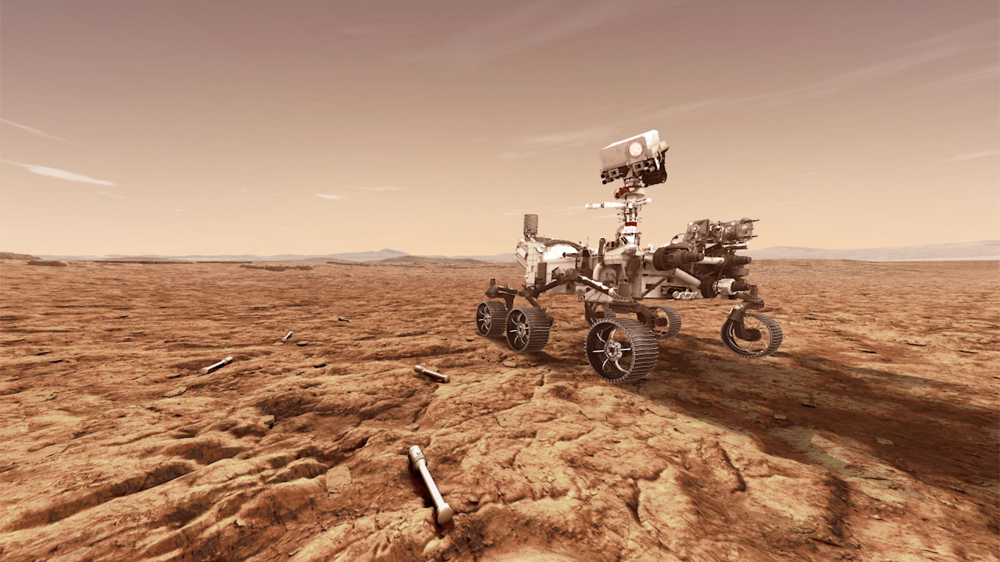
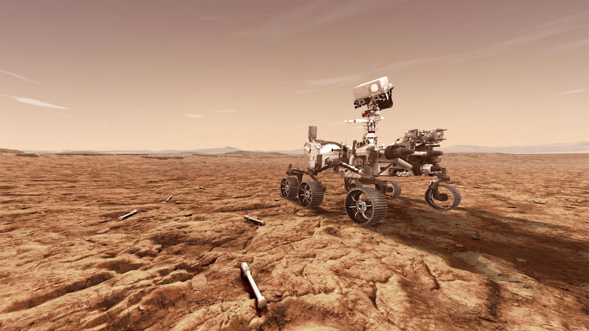

火星屬於地質行星，火星算是人類探勘最多的行星了，地表上沙丘、礫石遍布，泥土中充滿鐵礦物質而氧化後生鏽從而讓表面上看起來呈現是紅色的樣子，火星上有太陽系裡最高的火山比地球珠穆朗瑪峰高出了三倍。
有個名為 Valles
Marineris的大峽谷長度超過4800公里，寬度320公里深度7公里，是地球上的大峽谷十倍，也有人稱這大峽谷為巨獸的爪痕。
火星的大氣稀薄，主要由二氧化碳，氮氣和氬氣組成。由於懸浮的塵埃而不是我們在地球上看到的熟悉的藍色，天空將是朦朧的和紅色的。火星稀疏的大氣層並不能為隕石，小行星和彗星等物體的撞擊提供很多保護。
火星的自轉軸傾斜23.4度，這點與地球很相似所以火星上是存在著四季的，但是火星上每一季的時間相對於地球會很長，北半球的春季與南半球的秋季是194個地球日。北半秋季與南半春季是142個地球日。北半冬季與南半夏季是154個地球日。北半夏季與南半夏季是178個地球日。